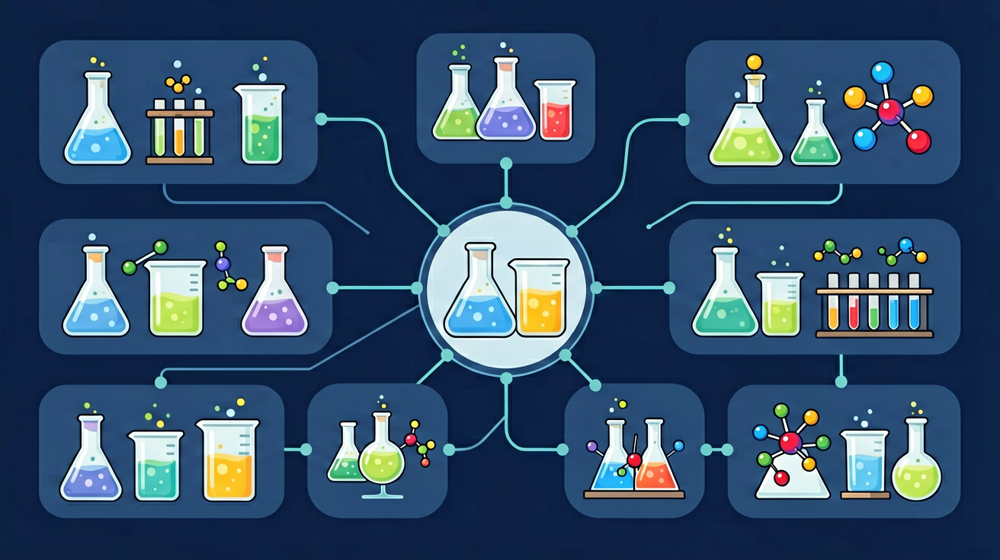
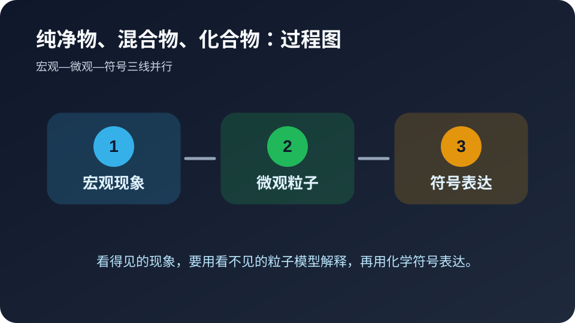
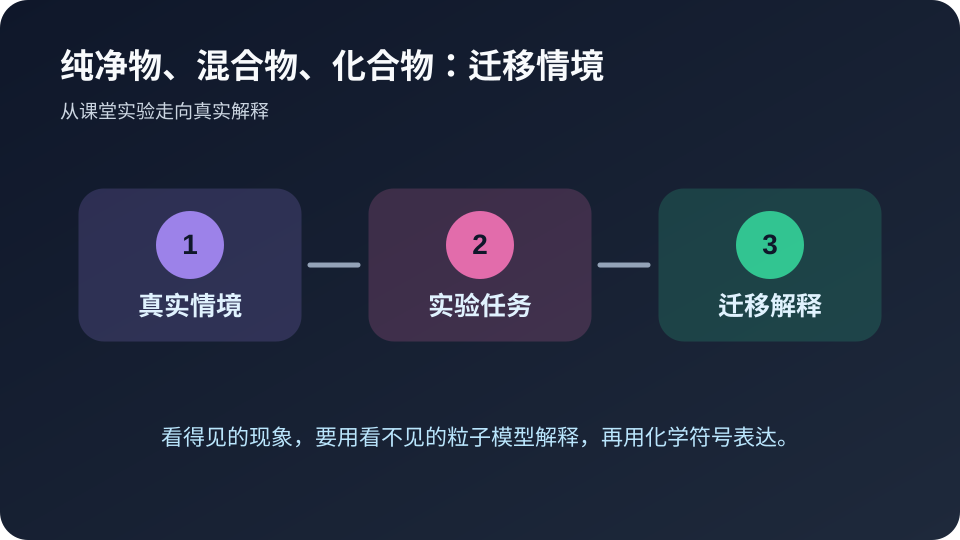

🎯 学习目标
- 能用自己的话解释纯净物、混合物、化合物的核心含义
- 能把纯净物、混合物、化合物和实验现象、微观粒子或化学符号联系起来
- 能识别纯净物、混合物、化合物相关的常见错误并完成迁移题
今天先解决纯净物、混合物、化合物里的哪个问题？
选择后，AI 学伴会围绕你的卡点给提示。
🧭 带着问题学
❓ 为什么空气是混合物，但水是纯净物？
❓ 食盐和铁锈都是化合物，它们有啥不一样？
❓ 冰水混合物到底是纯净物还是混合物？
学完这一课，这些问题你都能自信地回答。
📝 前测：你已经知道什么？
下面哪种学习方式最符合化学学科特点？
🔍 核心讲解：纯净物、混合物、化合物 的专属解释
题目会给出与纯净物、混合物、化合物有关的实验现象、物质名称或生活材料。
纯净物、混合物、化合物需要同时从物质组成、微观粒子和符号表达三个层面解释。
证据来自实验现象、物质性质、化学式或化学方程式。
深层理解：看见它是具体实验现象；拆开它要看 物质种类、反应条件、粒子数目和符号表达；解释它要说明为什么；比较它要避开易错点；迁移它要换到新情境。
🧩 过程图：从现象到解释

看见现象只是第一步。真正的化学解释，需要把“颜色、气体、沉淀、温度”等宏观线索，转译成“粒子种类、粒子数目、粒子间作用或重新组合”等微观语言，最后再落到符号表达。
🎛️ Canvas 真实互动：微观解释模拟器
拖动滑块，观察 物质种类、反应条件、粒子数目和符号表达 如何影响结果。
🔬 食盐提纯实验
设计实验证明粗盐是混合物
📘 核心概念模块：先把纯净物、混合物、化合物说清楚
纯净物、混合物、化合物需要同时从物质组成、微观粒子和符号表达三个层面解释。
这个模块只属于纯净物、混合物、化合物，因为它的关键证据是：证据来自实验现象、物质性质、化学式或化学方程式。 本课把学习任务拆成三步：识别现象、说明机制、用符号或数据完成解释。
🧪 例题示范模块：用纯净物、混合物、化合物解释一道题
情境：如果只写“这是纯净物、混合物、化合物”，没有写现象和符号依据，答案就不完整。
作答路径：先写现象，再写与纯净物、混合物、化合物相关的机制，最后写证据或条件。不要只写结论，要写出“因为……所以……”的推理链。
🔍 深层理解：五镜头
🔧拆开它
纯净物由同种分子构成，混合物含不同分子，化合物是纯净物中的特殊类型
💡解释它
化合物通过化学反应形成新物质，混合物只是物理混合
⚖️比较它
纯净物有固定组成，混合物比例可变；单质和化合物都属于纯净物
👁️看见它
用微观示意图展示食盐（NaCl晶体）与空气（多种分子）的区别
🚀迁移它
解释为什么合金是混合物而不是化合物
🚀 迁移任务模块：自己设计一个解释

请用纯净物、混合物、化合物解释一个生活或实验情境，写出现象、微观/符号解释和条件变化后的结果。
📝 真题练习
先独立作答，再点选项查看对错与错因。
选择题 1
下列属于化合物的是
选择题 2
将二氧化碳气体通入石灰水产生沉淀，该过程属于
选择题 3
下列对空气的描述正确的是
填空题 1
铁粉和硫粉混合后用磁铁可分离，说明该混合物属于____混合物
查看答案与解析
答案：机械
各成分保持原有性质
填空题 2
电解水得到氢气和氧气，证明水是____
查看答案与解析
答案：化合物
可分解为不同元素
✅ 后测：学会了吗？
⭐ 基础巩固：纯净物、混合物、化合物最重要的学习路径是什么？
⭐⭐ 能力应用：请用生活或实验场景解释纯净物、混合物、化合物。
⭐⭐⭐ 迁移挑战：设计一个小实验或判断题，验证你是否真正理解。